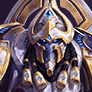
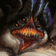
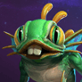

General
For general changes and/or gameplay updates, check out the official Patch Notes.
Heroes

Artanis
Updates
- Basic Attack range increased by 25%
-
Phase Prism (E)
- Range and speed have each been increased by 15%
Developer Comment: Artanis was having a harder time sticking to opponents than we'd like. This was hurting his ability to disrupt the enemy team and his ability to survive. We feel that a slight increase to his base kit will help alleviate this issue, while maintaining a lot of the playstyle (and counterplay) that we currently enjoy. The increased range on Phase Prism and his Basic Attacks should help him feel better to play, and help him more successfully fulfill his aggressive Warrior role. These changes are intentionally slight, as we feel Artanis is very close to being extremely powerful in today's game.
Bug Fixes
- Artanis's Purifier Beam will no longer track Murky back to his Egg if Murky was killed just as the Ability was cast.

Azmodan
Bug Fixes
- Azmodan's Globe of Annihilation will now deal the correct amount of damage while under the effects of Black Pool and the Taste for Blood Talent.
Bug Fixes
- Fixed an issue that could cause Brightwing's Phase Shield to be applied to Cho'Gall inconsistently.
Updates
- Basic Attack damage increased from 110 to 120
- Base Health increased from 3360 to 3528
- Base Health Regeneration increased from 7 to 7.35 per second
Developer Comment: Cho'Gall's win rate has been trending up since his release, but it is still a bit lower than we'd like. We have plans to improve Cho'Gall with Talent changes in the future, but we wanted to give him a small buff before then.
Bug Fixes
- Fixed an issue that could cause Brightwing's Phase Shield to be applied to Cho'Gall inconsistently.
- Fixed an issue which could allow Cho'Gall to regenerate Health after using Consuming Blaze on certain destructible objects.
Bug Fixes
- This fix will also resolve incorrect damage amounts for similar Talent interactions, such as Muradin's Storm Bolt with the Sledgehammer and Perfect Storm Talents, as well as Falstad's Gathering Storm and Overdrive Talents.
Bug Fixes
- Fixed an issue that could cause Leoric's Drain Hope to end prematurely.
Releases
Lunara, First Daughter of Cenarius, has been added to the Nexus and is now available for play! Read on for a brief overview of her Abilities.
Mount
- Dryad's Swiftness
- Lunara cannot use Mounts. Instead, you move 20% faster by leaping short distances.
Trait
- Nature's Toxin
- Your Basic Attacks and damaging Abilities poison the target, dealing damage each second for 3 seconds.
Basic Abilities >
- Noxious Blossom (Q)
- After 0.5 seconds, cause an area to explode with pollen, dealing damage.
- Crippling Spores (W)
- Enemies currently afflicted by Nature's Toxin have its duration increased by 3 seconds and are slowed by 40%, decaying over 3 seconds.
- Wisp (E)
- Spawn a Wisp to scout an area. Can be redirected once active. Lasts 45 seconds.
Heroic Abilities
- Thornwood Vine (R)
- Send forth vines that deal damage to all enemies in a line. Can hold 3 charges.
- Leaping Strike (R)
- Leap over an enemy, attacking and slowing the target by 80% for 0.35 seconds. Can hold 2 charges.
Bug Fixes
- This fix will also resolve incorrect damage amounts for similar Talent interactions, such as Muradin's Storm Bolt with the Sledgehammer and Perfect Storm Talents, as well as Falstad's Gathering Storm and Overdrive Talents.

Murky
Bug Fixes
- Artanis's Purifier Beam will no longer track Murky back to his Egg if Murky was killed just as the Ability was cast.
Updates
-
Plasma Shield (Q)
- Can now be cast on allies located in the Hall of Storms
Bug Fixes
- Tychus' Hero model will no longer disappear after capturing a Fort on the Towers of Doom Battleground.
Bug Fixes
- Punishers on the Infernal Shrines Battleground will no longer fly outside the playable area after leaping into Zeratul's Void Prison.